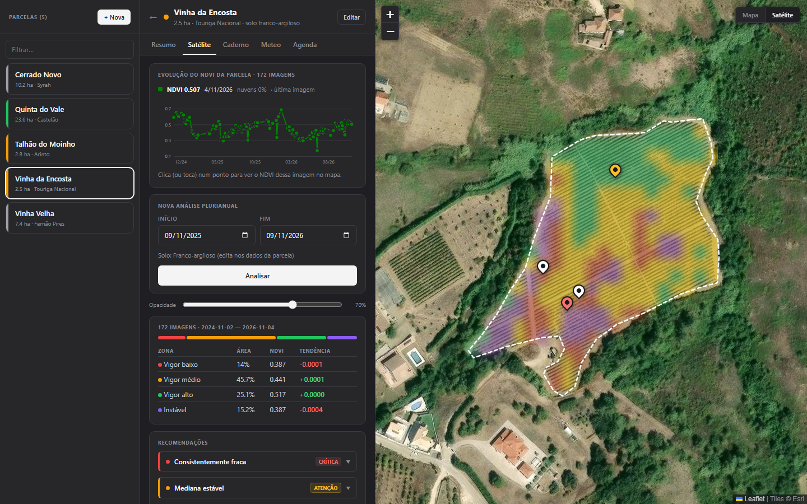
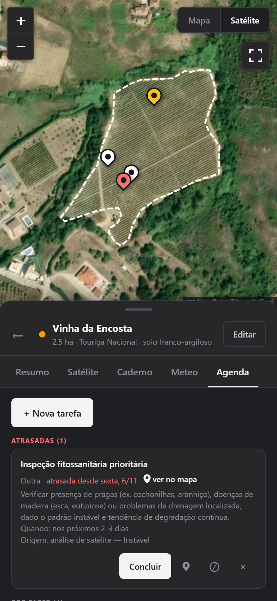
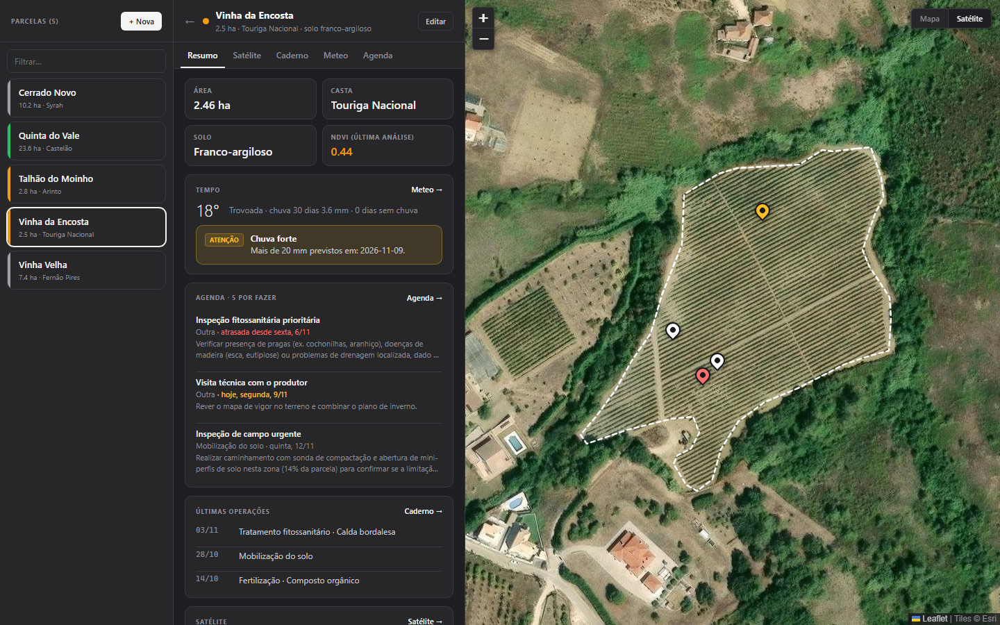
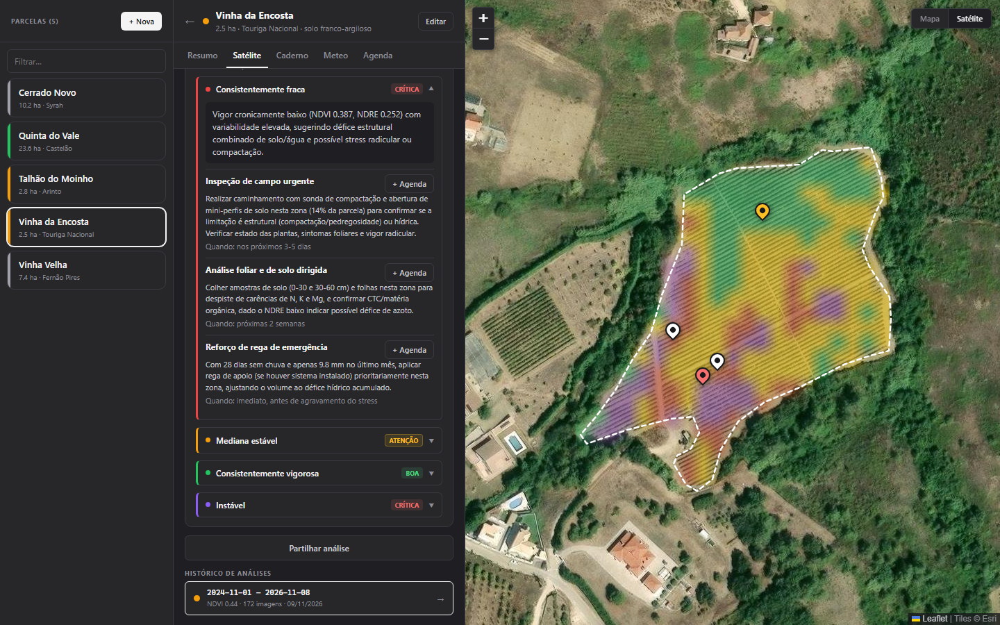
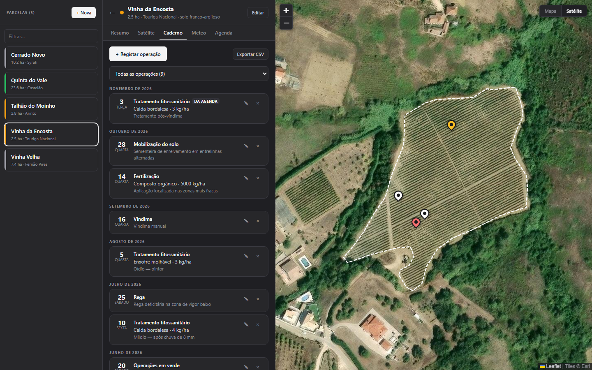
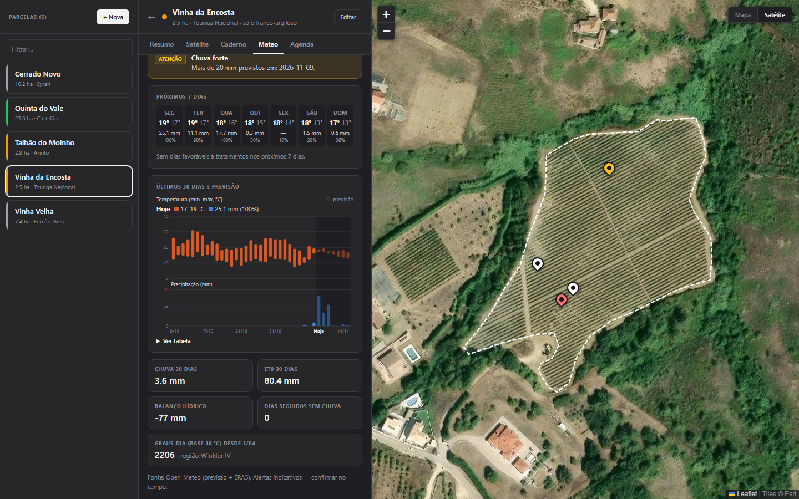
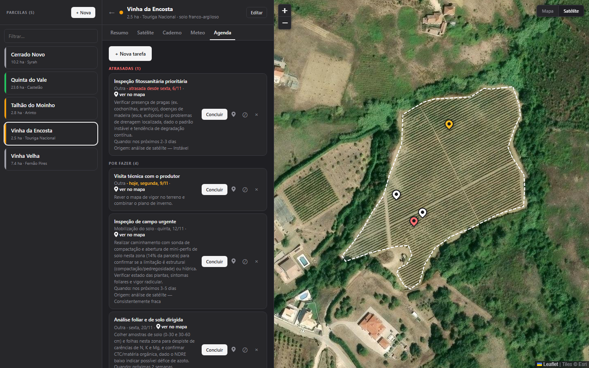
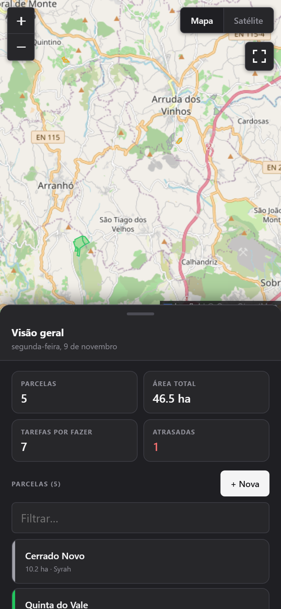
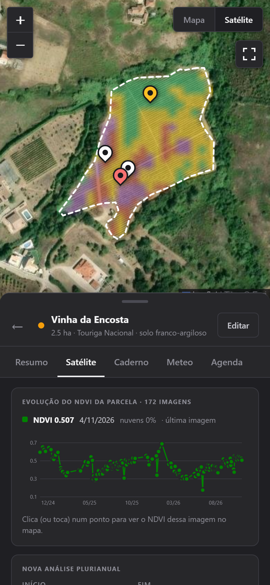

Vê a
vinha.
Satélite, caderno de campo, meteorologia e agenda, numa só ferramenta para o técnico de vinha.
EM DESENVOLVIMENTO
NOV 2026 · NDVI 0.53
IMAGEM 2 NOV 2026
De 786 km
à linha da vinha.
| Camada | λ | Res. | NDVI | NDRE | Máscara |
|---|---|---|---|---|---|
| B04 Vermelho | 665 nm | 10 m | |||
| B05 Red edge | 705 nm | 20 m | |||
| B08 Infravermelho próximo | 842 nm | 10 m | |||
| SCL Classificação da cena | — | 20 m |
NDVI = (B08 − B04) / (B08 + B04)
NDRE = (B08 − B05) / (B08 + B05)


-
01 · ÓRBITA · 786 km
Um satélite passa por cima.
O Sentinel-2 é do programa europeu Copernicus. Anda a 786 km de altitude e fotografa uma faixa de 290 km de cada vez. Volta a passar sobre a mesma vinha a cada poucos dias, e as imagens são gratuitas.
Mede a luz em treze bandas, do azul ao infravermelho médio. Cada uma vê a vegetação de uma maneira diferente.
-
02 · BANDAS · NDVI + NDRE
Mais do que vermelho e infravermelho.
Para cada data vêm só os píxeis da parcela, numa grelha de 10 m. O vermelho e o infravermelho próximo dão o NDVI, que faz as zonas e a curva.
O red edge dá o NDRE, que reage à clorofila mesmo com a copa fechada e entra nas recomendações de cada zona. A classificação da cena marca nuvens, sombras e água, e esses píxeis ficam de fora.
-
03 · PÍXEL · 10 × 10 m
A parcela, em quadrados de 10 m.
Cada píxel cobre 100 m². Esta parcela cabe em 243. A análise junta 172 imagens, tira nuvens e sombras píxel a píxel e divide a parcela em zonas.
Vigor baixo, médio, alto e instável: cada zona com a sua área, o seu NDVI e a sua tendência. As zonas comparam a parcela consigo mesma: vigor baixo quer dizer mais fraco do que o resto desta vinha.
-
04 · ECRÃ · A APLICAÇÃO
As zonas por cima do terreno.
No computador, as zonas ficam sobre a imagem de satélite. Ao lado está a curva do NDVI e a tabela das zonas. Tocar num ponto da curva abre o mapa dessa data.
-
05 · TERRENO · O PIN
E no bolso, no meio das linhas.
No telemóvel, o mesmo mapa. Cada tarefa tem um pin no sítio onde é para fazer: branco se está planeada, âmbar se é para hoje, vermelho se está atrasada.
Uma parcela,
cinco ferramentas.
Cada parcela abre com os mesmos cinco separadores. Os ecrãs são da aplicação; as tarefas e os registos são de demonstração.

- 01Área, casta, solo e o NDVI da última análise, logo no topo.
- 02O tempo de hoje e os alertas que tocam a esta parcela.
- 03As tarefas por fazer e as últimas operações do caderno, com atalho para cada separador.
- 01Meses ou anos de imagens Sentinel-2 numa só análise. Nuvens e sombras saem píxel a píxel.
- 02O NDVI faz as zonas e a curva. O NDRE de cada zona entra nas recomendações. Zonas com área, NDVI e tendência.
- 03Para cada zona, causa provável, gravidade, ações e quando atuar. Cada ação passa para a agenda.


- 01Tratamentos, fertilização, poda, rega, mobilização do solo, operações em verde e vindima.
- 02Cada registo leva o produto e a dose.
- 03Filtra por operação e exporta para CSV ou Excel.

- 01Os últimos 30 dias e a previsão a 7 dias, no ponto da parcela.
- 02Graus-dia de base 10 °C, região de Winkler, chuva acumulada, evapotranspiração e balanço hídrico.
- 03Alertas de geada, calor, chuva forte e risco de míldio pela regra 3-10. Dias favoráveis a tratamentos.

- 01Tarefas por data e tipo, cada uma com um pin no ponto exato.
- 02Branco: planeada. Âmbar: para hoje. Vermelho: atrasada.
- 03Ao concluir, o registo passa sozinho para o caderno de campo.
Dois anos
numa curva.
Cada ponto é uma imagem de satélite sem nuvens sobre a parcela: o NDVI médio dos seus píxeis nesse dia.
4 NOV 2026 · NDVI 0.507 · NUVENS 0%
Dados reais de uma vinha perto de Arruda dos Vinhos. A vinha muda ao longo do ano; é essa mudança que o técnico acompanha.
No terreno.
- A · O SÍTIO EXATO
- A tarefa marca-se com o dedo, no ponto da parcela onde é para fazer. Quem lá for vê o pin no mapa.
- B · O PAINEL
- O mapa ocupa o ecrã inteiro. O painel da parcela arrasta-se para cima e para baixo, sem tapar o terreno quando não é preciso.
- C · NO ECRÃ PRINCIPAL
- Instala-se no ecrã principal do telemóvel e abre como as outras aplicações.


O que já faz.
Tudo o que está nesta lista funciona hoje na aplicação.
-
PARCELAS
- As vinhas do OpenStreetMap aparecem no mapa e escolhem-se com um clique. Também se pode desenhar o contorno à mão.
- Pesquisa por localidade. Cada parcela guarda nome, casta e tipo de solo.
- A visão geral junta o número de parcelas, a área total e as tarefas por fazer ou atrasadas.
-
SATÉLITE
- Análise de meses ou anos de imagens Sentinel-2, com nuvens e sombras removidas píxel a píxel.
- NDVI a partir do vermelho e do infravermelho próximo; NDRE a partir do red edge. A classificação da cena tira nuvens, sombras e água.
- Zonas relativas à própria parcela: vigor baixo quer dizer mais fraco do que o resto desta vinha.
- Zonas de vigor baixo, médio, alto e instável, com área, NDVI e tendência.
- Curva do NDVI da parcela: tocar num ponto abre o mapa dessa data.
- Recomendações por zona com causa provável, gravidade, ações e quando atuar. Têm em conta o NDVI e o NDRE de cada zona, o solo, o declive da parcela e a meteorologia dos últimos 30 dias. Cada ação passa para a agenda.
- A análise partilha-se por link.
-
CADERNO
- Tratamentos fitossanitários, fertilização, poda, rega, mobilização do solo, operações em verde e vindima, com produto e dose.
- Filtros e exportação para CSV ou Excel.
-
METEO
- Últimos 30 dias e previsão a 7 dias, no ponto da parcela.
- Graus-dia de base 10 °C, região de Winkler, chuva acumulada, evapotranspiração e balanço hídrico.
- Alertas de geada, calor, chuva forte e risco de míldio pela regra 3-10. Dias favoráveis a tratamentos, sem chuva e com vento abaixo de 20 km/h.
-
AGENDA
- Tarefas por data e tipo, cada uma com um pin no ponto exato da parcela.
- Branco: planeada. Âmbar: para hoje. Vermelho: atrasada.
- Ao concluir, o registo passa para o caderno de campo.
-
TELEMÓVEL
- Mapa em ecrã inteiro e painel que se arrasta.
- Instala-se no ecrã principal.
- Gráficos legíveis ao toque.
A SEGUIR · EM ESTUDO
Ideias em estudo. Sem datas e sem promessa.
Queres ver a tua vinha?
O Vêavinha está em desenvolvimento. Se acompanhas vinhas e queres experimentar, escreve.
Escrever para veavinha@gmail.com